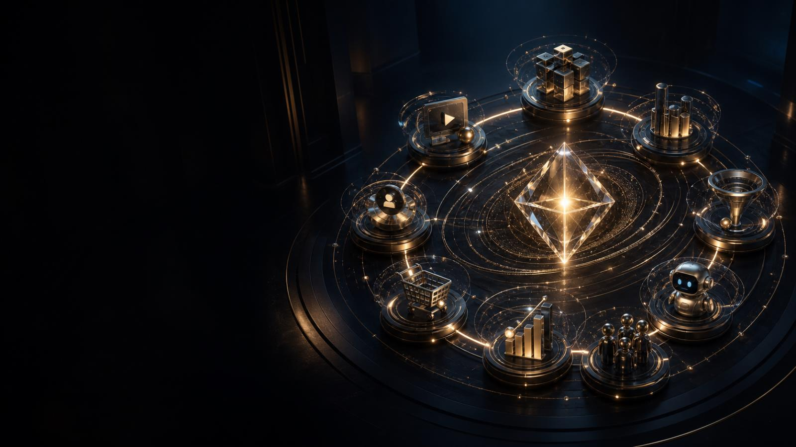
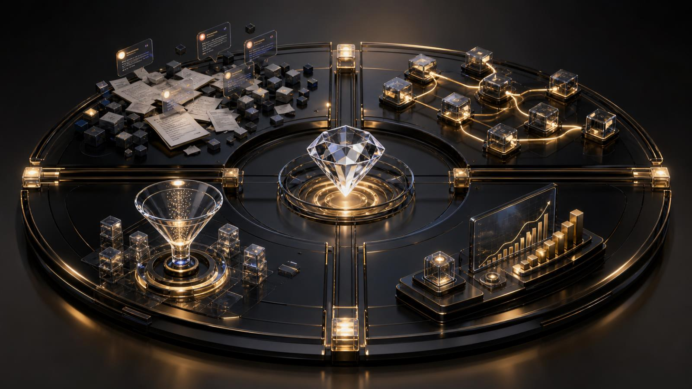

Внедрение под ключ
Мы проектируем связку под вашу нишу, подключаем сервисы, обучаем ассистентов, тестируем сценарии и передаём рабочую систему.

Нейросети создают контент, приводят трафик, ведут клиента по воронке, отвечают и превращают интерес в заявку — пока вы управляете бизнесом.
Бизнесу обычно хватает инструментов. Не хватает архитектуры, которая связывает их в один путь клиента. Откройте четыре этапа перехода — за изучение начисляются IQ-баллы.

Контент работает как производственная линия: привлекает, прогревает и ведёт к заявке. Посмотрите короткое объяснение перед картой системы.
Каждый модуль решает конкретную задачу. Автопилот связывает их в единый контур: от производства внимания до аналитики и масштабирования. Откройте узлы и собирайте IQ.
+5 IQ за каждый изученный модуль. Баллы начисляются один раз.
Не продаём «ИИ вообще». Вы выбираете скорость, степень участия и ближайший измеримый бизнес-результат.
Мы проектируем связку под вашу нишу, подключаем сервисы, обучаем ассистентов, тестируем сценарии и передаём рабочую систему.
Комьюнити предпринимателей: пошагово собираете контент, воронки и автоматизацию вместе с готовыми AI-ролями, разборами и практикой.
8 вопросов найдут конкретные разрывы в контенте, трафике, воронке, диалогах и аналитике. В результате получите приоритетный план действий, а не общую оценку.
Автопилот строится не с покупки очередного сервиса. Сначала проектируется путь клиента, затем подключаются AI-модули, контроль качества и аналитика.
Разбираем путь клиента, контент, каналы трафика, заявки, переписки и точки, где бизнес теряет время или деньги.
Связываем контент, воронку, AI-бота, заявку, продажу и аналитику в одну понятную схему.
Собираем продукты, кейсы, смыслы, возражения и правила коммуникации, чтобы нейро-команда отвечала в голосе бренда.
Настраиваем роли для контента, квалификации обращений, автопубликации, аналитики и повторяемых операций.
Проверяем ответы, маршруты данных, ошибки и качество результата до передачи системы в рабочий контур.
После измеримого результата переносим работающую механику на новые продукты, каналы и процессы.
Система не ограничивается ботом. Сначала она создаёт и распределяет внимание, затем переводит его в доверие, диалог и обращение.
Контент адаптируется под канал, а каждое касание получает измеримую следующую точку.
Тип воронки выбирается по продукту, зрелости аудитории и сложности решения.
Модули могут запускаться отдельно, но максимальный эффект появляется, когда они работают как единая нейро-инфраструктура маркетинга и продаж.
Идеи, SEO-структуры, статьи, посты, сценарии, карусели и материалы в едином стиле бренда.
Повторяемые конвейеры с ролями исследования, сценария, визуала, редактуры, публикации и контроля.
Первый ответ, квалификация, персональная рекомендация и передача подготовленного диалога человеку.
Модули для каруселей, автопубликации, контента, видео, аналитики и повторяемых задач бизнеса.
Источники внимания, конверсии между этапами, скорость ответа, качество обращений и точки масштабирования.
Обучение, готовые AI-роли, практические внедрения, разборы ошибок, обратная связь и партнёрства.
Работа идёт короткими проверяемыми этапами. Каждый шаг заканчивается конкретным результатом, а не презентацией ради презентации.
Фиксируем цели, процессы, доступы, ограничения и главные разрывы.
Собираем минимальный рабочий маршрут на одной приоритетной задаче.
Соединяем сервисы, данные, AI-роли и контроль ошибок.
Прогоняем реальные сценарии, корректируем ответы и измеряем эффект.
Обучаем команду, документируем систему и расширяем сильные связки.
Пройдите диагностику или напишите лично в MAX, чтобы определить, какую часть маркетинга и продаж выгоднее автоматизировать первой.